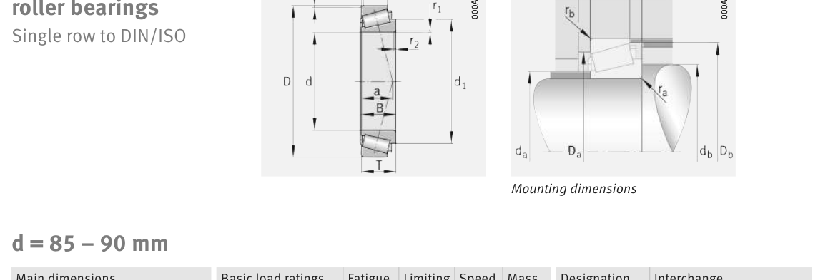

Original catalogue drawing - FAG Schaeffler HR 1, page 600

Scanned from the manufacturer catalogue page listing this part number. All part numbers printed on that table share the same drawing.
Scale cross-section
Blue = inner / outer ring, yellow = rolling element. Drawn to scale from this part's own
dimensions for selection reference only - not a manufacturing or assembly drawing.
Dimension table (mm / inch)
Symbol
Dimension
mm
inch
d
Bore diameter
85
3.3465
D
Outside diameter
170
6.6929
B
Inner-ring / bearing width
45
1.7717
T
Overall assembly width
48
1.8898
C
Cup / outer-ring width
33
1.2992
Notes
Weights are given in kg. Load ratings are shown in both the original catalogue units and the converted value (1 N = 0.2248 lbf). Data is provided for selection reference only - confirm against the latest official catalogue before ordering.
Main dimensions
Bore d (mm)
85
Outside dia. D (mm)
170
Width B (mm)
45
Overall width T (mm)
48
Cup width C (mm)
33
Inner-ring OD d1 (mm)
132
Load ratings & speeds
Basic dynamic load rating Cr (lbs)
69691
Basic static load rating Cor (lbs)
82055
Basic dynamic load rating Cr (N)
310000
Basic static load rating C0r (N)
365000
Basic dynamic axial rating Ca (N)
7
Fatigue limit load Cur (N)
55000
Factor e
0.8
Factor Y
0.75
Factor Y0
0.41
Limiting speed nG (rpm)
4,350
Reference speed nB (rpm)
3,550
Effective load centre a (mm)
55
Weight
Weight (kg)
4.83
Mounting dimensions (fillets / shoulders)
Chamfer r2 min (mm)
4
Shaft shoulder da (mm)
100
Shaft shoulder db (mm)
110
Housing shoulder Da (mm)
131
Housing shoulder Db (mm)
161
Housing fillet ra max (mm)
4
Fillet rb max (mm)
4
Bearing life (ISO 281 basic rating life)
C / P
Equivalent load P (N)
L10 (106 rev)
L10h at 1,400 rpm
4
77,500
102
1,209
6
51,667
392
4,673
8
38,750
1,024
12,190
10
31,000
2,154
25,648
15
20,667
8,323
99,089
Basic rating life per ISO 281: L10 = (C/P)10/3 with C = 310,000 N. Hours = L10 x 106 / (60n). Life-modification factors for lubrication, contamination and temperature (aISO) are not included.
Source & traceability
Brand
FAG
Source catalogue
FAG / Schaeffler Rolling Bearings HR 1
Catalogue page
p.600 (dimensions)
Load ratings in newtons, fatigue limit load Cur, limiting speed nG and reference speed nB.
Send us the quantity you need and we will come back with price and
lead time, normally within 24 hours. Equivalent parts from other brands can be quoted at the same time.